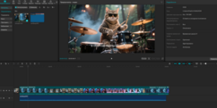
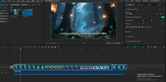
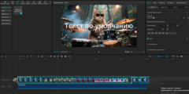
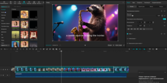
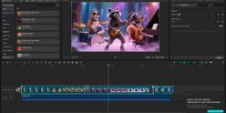
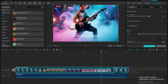
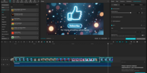

Как анимировать одну картинку в CapCut: превращаю статичное фото в крутое видео
Сегодня покажу свой проверенный процесс от А до Я: как загрузить картинку и сделать из неё полноценную анимированную видео-заставку с музыкой, движением, эффектами и переходами. Если где то что то ошибся есть откат назад. И конечно описание на сайте и демонстрация возможностей CapCut в Ютуб вещи разные, но для общего ознакомления можно почитать. Я загрузил маленький кусочек ролика.
📱 Пошаговая инструкция
Создаём новый проект
Открываю CapCut → нажимаю «Новый проект». Сразу выбираю формат (обычно 9:16 для TikTok/Reels или 16:9 для YouTube).

Друзья, закинули картинку, сразу ставим 9:16 иначе всё будет обрезано, горел на этом не один раз
Загружаю картинку
Нажимаю «Импорт» → выбираю нужную фотографию из галереи. Добавляю её на таймлайн.

Да если картинка не важно выглядит поправляем в редакторе, я говорю про разрешение, что бы не было зума
Делаю основную анимацию (самое важное!)
CapCut очень круто анимирует статичные изображения:
- Выделяю картинку на таймлайне
- Нажимаю «Анимация» (внизу)
- Выбираю «В комбинации» или «Ключевые кадры» — я чаще использую ключевые кадры, потому что так точнее
- Ставлю первый ключевой кадр в начале: немного уменьшаю масштаб (например 95%) и чуть сдвигаю картинку
- В конце клипа (обычно 8–15 секунд) ставлю второй ключевой кадр: увеличиваю масштаб до 110–130% и сдвигаю в другую сторону (эффект параллакса)
- Добавляю лёгкий поворот или tilt (наклон) — смотрится очень живо
Можно также использовать готовые пресеты анимации: Zoom In, Pan Right, Fade, Glitch и т.д.

В CapCut кстати очень много шаблонов для картинок, да я как то в платном плане был, так
Добавляю эффекты и стили
Перехожу во вкладку «Эффекты» → «Видеоэффекты». Очень люблю:
- Light Leak, Film Grain, Vintage, Cinematic
- Particle эффекты (пыль, блики, искры)
- Glitch или Distortion для современного вайба
Также использую «Коррекцию» → повышаю насыщенность, контраст и добавляю тёплый/холодный тон под настроение.

CapCut много вариантов для выбора тона, цвета
Музыка — это 50% успеха
Нажимаю «Звуки» → «Музыка». Ищу трек по настроению (рекомендую разделы «Популярное», «Эмоциональное», «Cinematic»).
- Обрезаю музыку точно под длину видео
- Добавляю «Звуковые эффекты» (лёгкий wind, heartbeat, sparkle — в зависимости от темы)

Музыка, тут надо внимательно быть, но и всё равно ютуб может зарубить трек
Финальные штрихи
- Добавляю текст с анимацией появления (особенно круто выглядит «Typewriter» или «Fade»)
- Ставлю переходы между разными движениями картинки (если делаю несколько сцен)
- Использую «Маски» и «Наложения», чтобы добавить дополнительные элементы (например, лёгкий туман или свет)
- В конце применяю «Скорость» → чуть замедляю некоторые участки для большего драматического эффекта

О тут вообще вариантов, на выбор, хочешь делай быстрее, громче
Экспорт
Нажимаю «Экспорт» → выбираю 1080p или 4K (если оригинал позволяет) и 60 fps для максимальной плавности.
✅ Готово!
Внизу загрузил видео лесного концерта, так как оно очень тяжёлое, пришлось сжимать, каччество ухудшилось, на ютуб выложу как есть.
Я для сайта "АЙ ВЕБ ДОМ" ЮТУБ КАНАЛ ЗАВЁЛ https://www.youtube.com/@АЙВЕБДОМ. ЗАХОДИТЕ СМОТРИТЕ ВСЁ ЧТО САМ ДЕЛАЛ И ГДЕ ТО И БУДУ ГРУЗИТЬ
<р>НАВЕРНОЕ СКОРО ВОПРОС И С АЙ-АГЕНТОМ РЕШИТСЯ ОН ИЛИ БУДЕТ У МЕНЯ ИЛИ БУДЕТ ПОТОМДрузья у меня есть опыт вернее какоой опыт, (пробный шарж два раза), но это что то с чем то, я просто загрузил промт, что надо сделать и смотрел, восхищался тем что он творил

🚀 Бонус: Эффект «Летающая камера» (Заморозка времени)
Друзья, это один из моих любимых продвинутых трюк! Попробуте сделать из обычного видео настоящий голливудский экшен.
- 🎥 Снимаем исходник: Замираем в определенной позе и снимаем видео, плавно двигаясь слева направо (лучше использовать стабилизатор или штатив).
- Монтируем сцены: Снимаем нужное количество таких видео в разных позах и добавляем их все на таймлайн в CapCut.
- ⚡ Настраиваем скорость: Выбираем первое видео, заходим в «Скорость» → «Кривая» → «Пользовательский».
- Делаем замедление: Первую точку поднимаем до конца, вторую смещаем вправо до нужного кадра (откуда начнется замедление) и опускаем на 0,5-0,8х.
- 🎯 Выравниваем кривую: Третью точку удаляем. Четвёртую ставим примерно как вторую. Пятую ставим на максимум и нажимаем галочку.
- 🔄 Применяем ко всем: Делаем те же настройки скорости для всех видео на таймлайне и сохраняем (скачиваем) черновик.
- Возвращаемся в проект: Снова добавляем скачанное видео в CapCut на новый таймлайн.
- 🌫️ Добавляем динамику: Заходим в «Эффекты» → «Размытие экрана». Ставим первый ползунок на 100, второй — на 50.
- ✨ Финальный штрих: Нажимаем вкладку «Кратность» и выбираем четырёхкратное. Всё готово! Смотрим результат!
🎬 Крутое видео от CapCut — смотри до конца!
🎁 Хочешь персональный совет?
Кидай мне свою картинку (или опиши, что на ней), и я подробно расскажу, какую именно анимацию, музыку и эффекты лучше всего к ней применить. Я реально хорошо в этом разбираюсь! 🔥
📩 Написать в Telegram📚 Полезные материалы:
- 🎬 YouTube канал АЙ ВЕБ ДОМ — там выкладываю свои работы и туториалы
- HeyGen: как делаются АВАТАРЫ и не только
- Chad AI — GPT-5.5, Gemini 3.1 Pro, Claude, Perplexity все тут